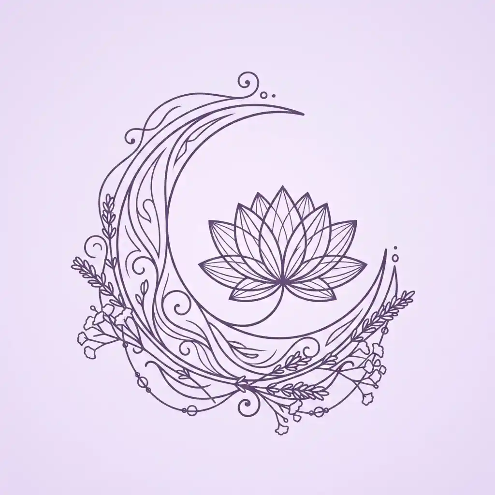
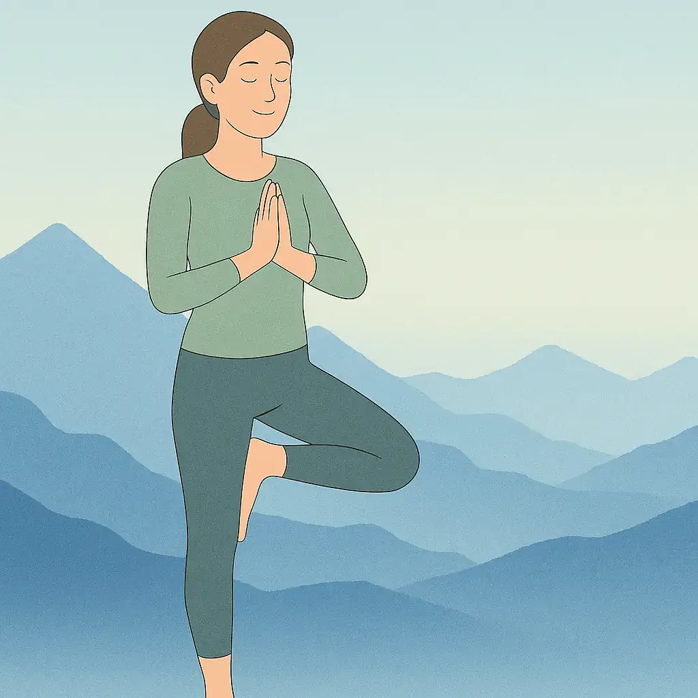
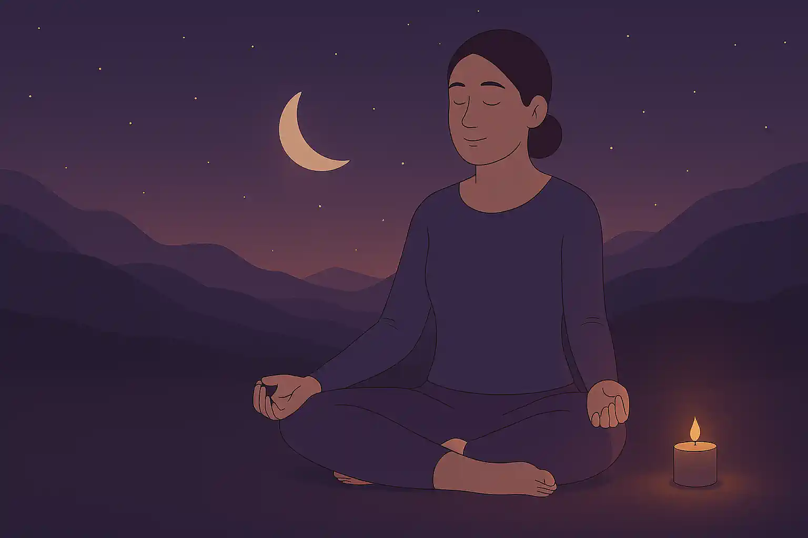
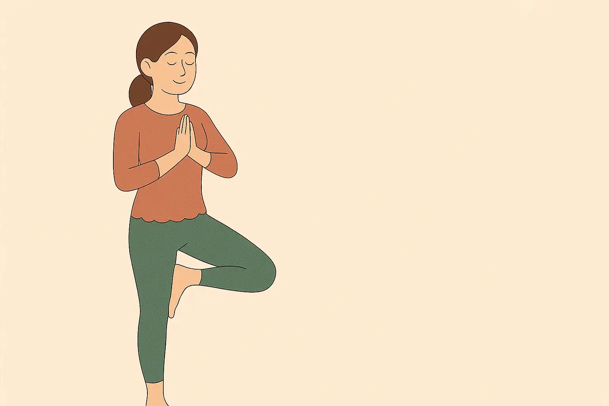
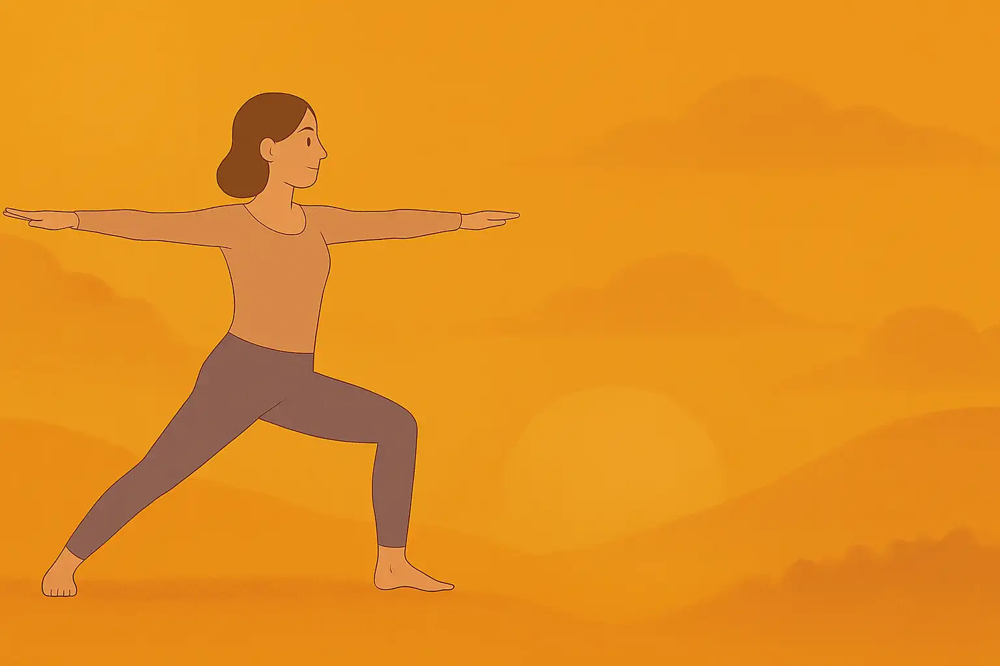
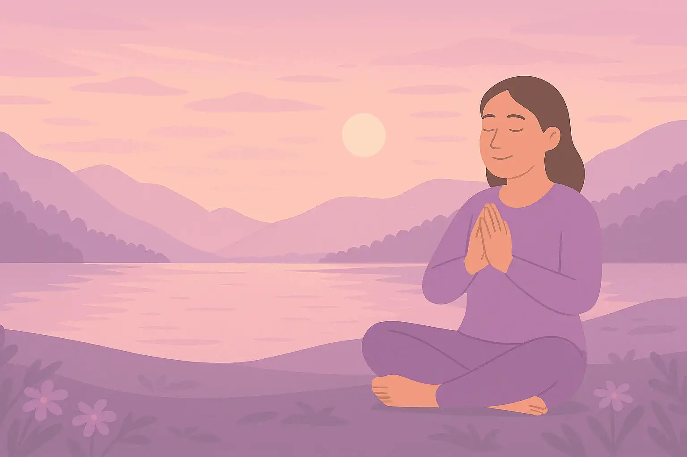
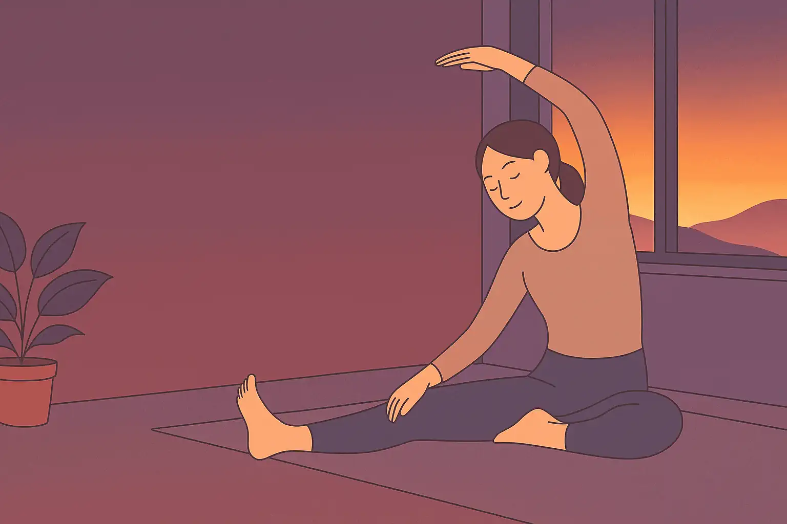

當你的心完成命運儀式，守護者會把你帶到更安靜的地方。
Luna Yoga Music 是 LoveTypes 宇宙中的月光聲音聖域，
用瑜珈、冥想與療癒旋律，讓你重新聽見自己的情緒。
Luna Yoga Music 不只是外部音樂頻道，而是 LoveTypes 宇宙的情緒聲音層。每一組旋律都像守護者點亮的一盞月燈，陪你進入晨間喚醒、睡前放鬆、情緒釋放與身體安定。
如果五位守護者幫你理解「你如何愛人」，Luna 則幫你聽見「你此刻需要如何被安放」。在開始測驗前、讀完角色頁後，或想沉澱關係情緒時，都可以回到這裡。
把播放清單想像成進入角色宇宙的背景音。不是單純播放音樂，而是選擇一種能承接你情緒的守護場域。
每個播放清單都對應一種情緒狀態。你可以先選聲音，再回到測驗尋找最理解你的守護者。

精選單曲合集，涵蓋各種療癒氛圍。無論你需要的是沉靜、釋放還是療癒，這裡都有適合的聲音陪伴你。
▶ 立即聆聽
入睡前與伴侶一起聆聽，讓輕柔的音符洗去一天的疲憊，在放鬆的氛圍中靠近彼此、安心入眠。
▶ 立即聆聽
每天早晨的美好從這裡開始。溫柔的能量帶你喚醒身體，以開放的心迎接嶄新的一天和你身邊重要的人。
▶ 立即聆聽
當壓力讓你難以表達愛，先讓音樂幫你打開身心。深度伸展搭配冥想旋律，釋放緊繃，重回柔軟的自己。
▶ 立即聆聽
專為女性設計的療癒系列，透過音樂進行情緒釋放與內在連結，幫助你在關係中以更完整的自己去愛與被愛。
▶ 立即聆聽
完整 1 小時的瑜珈冥想音樂，適合深度練習或二人共同的靜心時光。在流動中找到彼此的節奏與默契。
▶ 立即聆聽不同的愛的語言，對應不同的聆聽方式。找到你的語言，讓音樂幫你說出口
播放療癒音樂時，趁機說出平時不敢說的感謝與愛意，音樂降低了防備，話語更容易進入心裡。
關掉手機，只是兩個人一起聽音樂、做瑜珈或靜坐。純粹的「在一起」，是精心時刻最簡單的實踐。
為伴侶策劃一個專屬的音樂冥想時光，挑選最適合他/她的播放清單，這份用心就是最好的禮物。
當伴侶壓力大時，靜靜地播放舒壓音樂，泡一杯茶陪在身邊。不用說話，行動說明一切。
在睡前放鬆音樂中，輕握對方的手或相擁而坐。音樂讓身體自然放鬆，接觸也更自然流露。